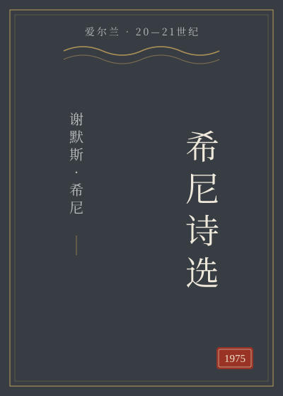
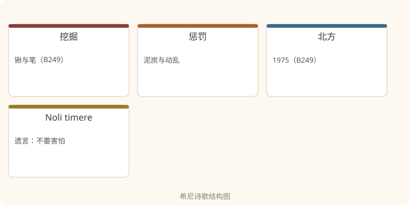

希尼诗选
一、基本信息
| 作者 | 谢默斯·希尼 |
|---|---|
| 成书/出版 | 诗作于1966—2013年间；通行选本数十首 Seamus Heaney — Encyclopaedia Britannica（百科全书） |
| 国别/地区 | 爱尔兰 |
| 时代 | 现当代 · 20—21世纪 |
| 体裁 | 诗选集 |
| 语言 | 英语 |

希尼诗歌结构图（主题·结构图）
二、创作背景
Britannica：希尼之诗'evoked Irish rural life, history, and myth, often reflecting indirectly on the Troubles'（唤起爱尔兰乡村、历史与神话，间接映照北爱动乱）。
诺奖授奖词（B249）：'for works of lyrical beauty and ethical depth, which exalt everyday miracles and the living past'。
三、内容脉络
《挖掘》：'Between my finger and my thumb / The squat pen rests. / I'll dig with it.'（B249）——以笔为锹的起点。
《惩罚》：以远古泥炭女尸并置动乱中的涂油之刑（B249 转述）。
《北方》（1975）直接处理北爱暴力（B249）。
四、主要人物表
| 人物 | 身份 | 说明 |
|---|---|---|
| 挖土者/诗人 | 抒情自我 | 锹与笔的转换（B249） |
五、主题与艺术特点
- 日常奇迹与'活着的过去'（B249 授奖词）。
- 语言与暴力的伦理（B249：《惩罚》并置法）。
- 乡村劳作的圣化（B249：《挖掘》）。
六、影响与评论
- Britannica：1995年诺奖——'lyrical beauty and ethical depth'。
Seamus Heaney — Encyclopaedia Britannica（百科全书） - Britannica：《北方》'began to encompass more directly such subjects as the violence in Northern Ireland'。
Seamus Heaney — Encyclopaedia Britannica（百科全书）
七、阅读建议
难点
- 北爱历史（'Troubles'）背景注释。
- 泥炭考古意象的互文。
- 《希尼诗选》（广西人民出版社，通说待核）。
- 《通往Electric之光》？（中译本信息待核）。
先《挖掘》→《惩罚》→《北方》组诗。
八、待核实
- 中译本信息核对。
- 《田野工作》等篇目核对。
- 诺贝尔演说'Crediting Poetry'待核。
本页主要来源
谢默斯·希尼的其他收录作品：希尼诗选